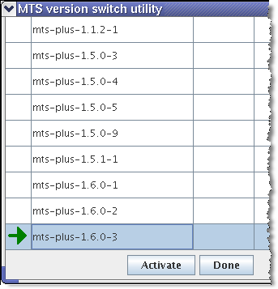
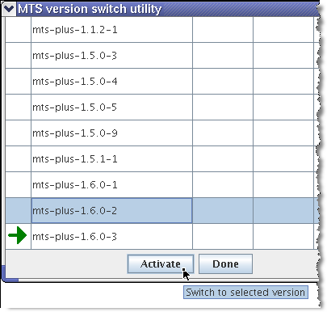
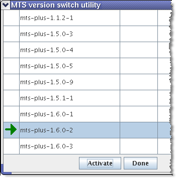

Switching to a different MTP version on SmarTest
Four manners are available for you to switch to another MTP software version.
About this task
Manner 1 and 2 are similar to the switch of SmarTest versions.
Before you begin
At least one MTP software package has been installed on your system.
Procedures
Manner 1
Go to .
Then the system will let you select the SmarTest version, the test method library version, and the MTP version successively.
Manner 2
At a shell prompt, type the command: /opt/hp93000/soc_common/bin/switch_version.
Then the system will let you select the SmarTest version, the test method library version, and the MTP version successively.
To see more options of the switch_version command, type /opt/hp93000/soc_common/bin/switch_version -h.
Manner 3
Before using Manner 3 and 4, make sure you have write permissions on:
- /opt/93000mts
- /etc/opt/93000mts
- /var/opt/93000mts
Procedure:
- Open a terminal window.
- Change directory
cd /opt/93000mts/mts/utilities/bin
- On the command line, type MtsVersion
The following window appears (example):

The window shows all available versions. A green arrow points to the currently active version.
- Highlight the version you want to switch to and click Activate(see
following figure):

The green arrow now points to the version that has become active (see following figure):

- To close the window click Done.
Manner 4
You can also use a terminal window only to change an MTP version.
Procedure:
- Change directory
cd /opt/93000mts/
- To see all installed MTP versions type
ll -ls
The result may look as follows:
mtp -> mtp-2.3.0-1 mts-plus-1.5.0-8 mts-plus-1.5.0-9 mts-plus-1.6.0-1 mts-plus-1.6.0-2 mts-plus-1.6.0-3
The mtp link in the first line points to the currently active version.
- Change
directory
cd /opt/93000mts/mts/utilities/bin To change the version, type (for example): switch_version mts-plus-1.6.0-2 ll -ls
- You will see the running process and successful result on the terminal window, for
example:
Switching to version 'mts-plus-1.6.0-2' Switching in '/opt/93000mts' Switching in '/etc/opt/93000mts' Switching in '/var/opt/93000mts' OK
Functional changes
- MTP 3.3.0: Adds two new methods, Manner 1 and 2, that the SmarTest version-switch command starts to support MTP versions switch.